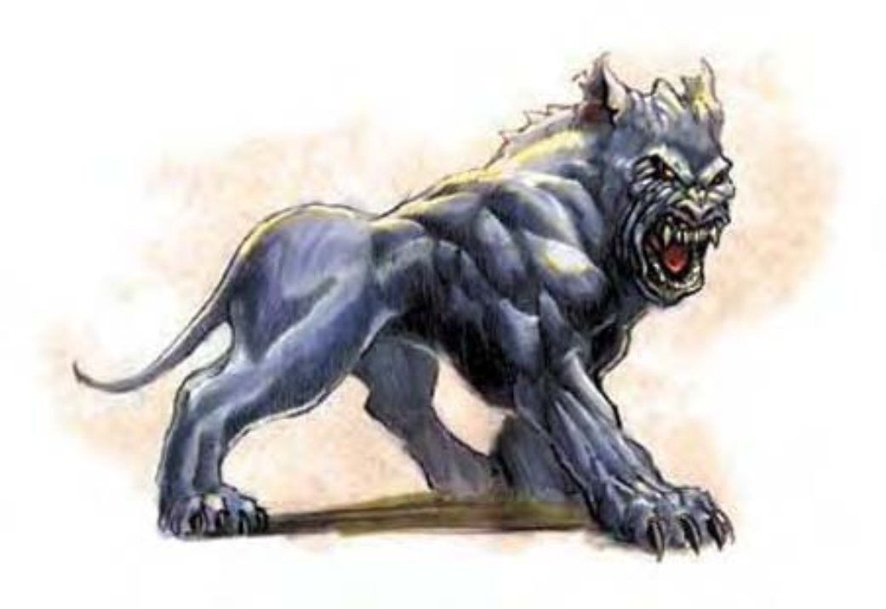

这种生物身似巨犬，有着一身柔顺的黑皮与满嘴锋利的牙齿。
幽影獒犬是深夜中徘徊的大型猎犬，嗅探着任何能够找到的猎物。他们的原生界域是一个永恒幽暗之处。
幽影獒犬肩高约2英尺，重达200磅。
幽影獒犬不能说话，但能够理解通用语。
| 资料栏位 | 幽影獒犬 (Shadow Mastiff) 中型异界生物 (外界) |
| 生命骰 | 4d8+12 (30HP) |
| 先攻 | +5 |
| 速度 | 50英尺 (10格) |
| 防御等级 | 14 (+1敏捷、+3天生)、接触11、措手不及13 |
| 基本攻击/擒抱 | +4 / +7 |
| 攻击 | 啮咬+7近战 (1d6+4) |
| 全力攻击 | 啮咬+7近战 (1d6+4) |
| 占据/触及 | 5英尺 / 5英尺 |
| 特殊攻击 | 吠叫、阻绊 |
| 特殊能力 | 黑暗视觉60英尺、融入身影、灵敏嗅觉 |
| 豁免 | 强韧+7、反射+5、意志+5 |
| 属性 | 力量17、敏捷13、体质17、智力4、感知12、魅力13 |
| 技能 | 躲藏+8、聆听+8、潜行+8、侦察+8、生存+8* |
| 专长 | 闪避、精通先攻、追踪B |
| 环境 | 幽影界 |
| 组织 | 单独、成双或一批 (5-12) |
| 宝藏 | 无 |
| 阵营 | 总是中立邪恶 |
| 进化 | 5-6HD (中型)；7-12HD (大型) |
| 等级修正值 | +3 (部属) |
幽影獒犬偏好在阴影中或黑暗环境下战斗，他们可藉此占有极大优势。如果魔法光源抵消了周遭的黑暗，幽影獒犬会机警地避开光源或退后再以吠叫扰乱人。据说有人利用附有“昼明术”的物品抓到他们。
吠叫 (超自然)：当幽影獒犬嚎叫或狂吠时，300英尺扩散范围内的生物必须通过意志检定 (DC=13)，否则会陷入慌乱2d4轮。邪恶异界生物不受影响。这种音波属于影响心灵的恐惧效果。无论检定是否成功，24小时内都不会再受同一个幽影獒犬的吠叫影响。豁免检定DC的调整值与魅力调整值相同。
阻绊 (特异)：幽影獒犬一旦用啮咬攻击命中目标，就可试着直接以即时动作阻绊对方 (+3检定调整值)，且无须进行接触攻击，也不会引发借机攻击。即使失败了，对手也不能反过来阻绊幽影獒犬。
融入身影 (超自然)：除了完全日光外，在任何照明环境下，幽影獒犬都可在阴影中消失，使其具有完全隐蔽。神器照明无法抵消此能力，包含“光亮术”与“不灭明焰”。但“昼明术”可以。
技能：*幽影獒犬利用嗅觉进行追踪时，“生存”检定具有+4种族加值。